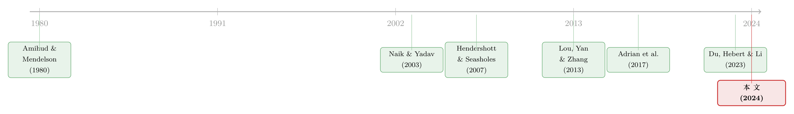

国债拍卖的「接盘人」：一级交易商如何吞下、扛住、再卖出一波又一波供给
本文读的是 Fleming, Nguyen & Rosenberg (2024, Journal of Financial Economics)：用横跨 31 年（1990–2020）的美国一级交易商周度头寸数据，作者发现，真正驱动交易商库存变化的，不是什么神秘的投机或做市，而是国债发行本身。交易商在拍卖周吞下大量新债，只在相邻几周做小幅对冲，几乎不用期货去套保拍卖头寸，而是靠「先低买、后高卖」——持有期间债券价格回升——来获得承担库存风险的补偿。但危机后监管成本上升、投资基金涌入一级市场，这份补偿正在悄悄缩水。
1 一个被忽略的常识问题
先讲一个谁都知道、却很少有人认真追问的事实。
美国财政部要借钱，办法是发新债——而且发得又频繁、又巨大。2020 年底，可流通国债余额已经高达 $20.9 万亿，是全世界「单一最重要的金融市场」（Group of Thirty, 2021）。这些债不会凭空消失到投资者手里，中间有一道闸门，叫做 一级交易商 (primary dealers)。他们背着一项特殊义务：「在所有国债拍卖中按比例、以合理竞争性的价格投标」。
于是问题来了。拍卖是规律性的、可预测的、规模巨大的——这意味着交易商的库存，会被反复地、可预见地砸出一个个大坑。Madhavan (2000) 有一句话点破了做市商的本质：「正如实体市场在空间上把买家和卖家聚到一起，做市商则是一个在时间上把买卖双方撮合起来的机构——靠的就是库存。」
可交易商的资本是有限的。当国债市场从 1990 年的 $2.1 万亿，膨胀到 2008 年的 $5.8 万亿，再到 2020 年的 $21 万亿，而中介机构的资产负债表却在 2007–09 金融危机后陷入停滞（Adrian et al., 2017b; Duffie, 2020），一个朴素的疑问就变得越来越尖锐：
交易商到底是怎么吞下这一波又一波的供给冲击的？
奇怪的是，这个问题此前几乎没人正面回答过。股票、期货、外汇市场的做市商库存研究汗牛充栋，可固定收益市场——尤其是体量最大、最重要的美国国债市场——却几乎是一片空白。唯一的例外是 Naik and Yadav (2003b) 对英国金边债券（gilt）交易商的研究。本文，是第一篇正面分析美国国债交易商如何管理头寸的论文。
2 数据：一份难得的「库存全景图」
要回答这个问题，最大的障碍是数据。个体交易商的库存是高度保密的。
作者用的是纽约联储 FR2004A 统计报表：一级交易商每周三收盘时上报其在各类固定收益证券上的净头寸，纽约联储把它们轧差、加总后，滞后一周公布（2004 年 1 月之前是滞后四周）。样本从 1990 年 7 月一直到 2020 年 12 月，共 1592 周。现券（spot）头寸覆盖全样本，期货与期权头寸只到 2001 年 6 月 27 日为止——这是个遗憾，但也是这份数据的天花板。
一个容易被忽视的细节：作者特意确认，周度头寸变化几乎完全来自组合成分的变动，而非估值效应。对国债票息证券，头寸变化的总标准差是 $9.36 十亿，其中估值效应贡献的标准差只有 $0.40 十亿；对短期国库券（bills），这个对比更悬殊（$9.49 对 $0.01）。换句话说，我们看到的库存波动，是真真切切的「买进卖出」，不是价格涨跌的账面幻觉。
描述性统计（Table 1）本身就讲了一个故事：一级交易商平均在 短期国库券 (bills) 上净多头 $15.86 十亿，却在 票息证券 (coupons) 上净空头 $9.96 十亿；而且 coupons 的头寸波动剧烈得多——标准差 $76.62 十亿，是 bills（$17.51 十亿）的四倍有余。这暗示着：交易商对长久期、高利率风险的票息债，管理方式与短债截然不同。这条线索，后面会反复出现。
3 谁在推动库存？答案朴素得有点反直觉
接着，一个最自然的问题是：交易商每周的库存到底被什么推动？
人们的直觉往往是「投机」「做市」「预判利率」这些听起来很「聪明」的东西。但本文的第一个核心结论，朴素到近乎反高潮：
国债的发行与赎回，本身就解释了交易商头寸变化的一大部分，其解释力远远超过其他所有决定因素。
具体来说，拍卖周里，交易商的头寸显著上升——他们吞下了新供给的一大块；而且这个库存冲击相当持久，至少要扛上一周才慢慢消化。反过来，在国债到期赎回时，交易商头寸下降，说明他们买入并持有了很多证券一直到期，或者赎回让客户拿到一笔需要再投资的钱、转而向交易商买入其他国债。
那么「投机」和「平滑」去哪了？作者发现，交易商确实会在相邻周里建立反向头寸来平滑拍卖造成的库存冲击——但这些反向头寸，相比拍卖周本身的活动，规模小得可怜。这恰恰点出了国债交易商区别于其他市场做市商的关键难处：他们必须吸收并长期扛住频繁、巨大的供给冲击，而不是像股票做市商那样日内就能轧平。
这里还引出一个与回购市场的有趣联系。作者发现交易商的国债库存变化与他们在回购 (repo) 市场的净融资活动正相关；更重要的是，证据指向的因果方向是——交易商做回购，是为了支持国债库存管理，而不是回购活动引领了库存变化。这给 Yadav and Yadav (2024) 关于一级交易商「在现券与回购两个市场之间，遇到稀缺时优先哪一个」的讨论，提供了一点实证上的清晰度。
（关于交易商资产负债表如何把一个市场的供给冲击「溢出」到另一个市场，可参见《一张资产负债表，两个市场：当国债拍卖悄悄挤掉了 MBS 的做市能力》。）
4 真正关键的一步：交易商为什么「不对冲」？
然后，真正关键的一步来了。
既然交易商被迫扛下这么大的库存风险，一个标准的金融学反应是：那就去对冲啊，用国债期货把利率风险锁住不就行了？
但本文给出的答案是：他们并没有显著地用期货去对冲拍卖带来的库存。 而且这个「不对冲」，恰恰不是疏忽，而是一种精明的选择性对冲 (selective hedging)。
作者把库存变化拆成两块：一块由拍卖驱动，另一块由交易商的其他活动（投机性交易、二级市场做市等）驱动。结果发现——
- 交易商对 coupons 的对冲意愿，比对 bills 强，这与前者更高的利率风险一致；
- 但对拍卖驱动的库存变化，交易商反而不太愿意对冲；对其他因素驱动的库存变化，他们对冲得更积极。
为什么会反过来？这里藏着全文最漂亮的一个逻辑。财政部承诺「规律且可预测」的发行节奏（Garbade, 2007），刻意把基于私人信息的策略行为压到最低。所以拍卖带来的库存流，几乎不含 逆向选择 (adverse selection) 风险——大家都知道债要来、什么时候来、来多少，没人能靠信息优势占你便宜。既然这块库存里没有「被信息更灵通的对手坑」的风险，那它就是纯粹的库存风险，不必急着用期货去套保。 反过来，与客户交易、自营交易产生的库存流，里头可能潜伏着信息不对称，对冲它，是为了减轻逆向选择风险。
这与 Naik and Yadav (2003b) 在英国金边债券市场看到的逻辑如出一辙。一个「无信息」的供给冲击，反而让交易商更安心地把它扛在身上——这是理解后面「补偿」故事的钥匙。
5 于是反转出现：「不对冲」是因为这本身就是一门生意
如果拍卖库存不用对冲、又要扛上至少一周，那交易商图什么？白白承担风险吗？
当然不是。本文最有「资产定价」味道的发现在这里：
拍卖引致的库存变化，与当周的国债收益率（return）轻微负相关，却与下一周的国债收益率强烈正相关。
把这两句话连起来读，画面就清晰了：交易商在拍卖周价格被压低时买入国债，然后在价格回升之后、于随后几周卖出。承担库存风险的补偿，不是来自手续费，而是来自持仓期间的价格回升。这等于在国债拍卖周围，识别出了一个此前未被探索过的、收益率可预测性的微观结构成分。
这一点尤其值得玩味，因为 Naik and Yadav (2003b) 当年考察英国交易商的盈利能力时，并没有找到交易商头寸会升值的证据。而本文在美国国债市场上找到了。它也呼应了股票市场的发现（Hendershott and Seasholes, 2007）：做市商库存在「多日」的时间尺度上对资产价格有显著影响——而且本文进一步证明，即便库存变化是众所周知的（拍卖人人皆知），这种价格效应依然存在。
（这与「拍卖前价格下行、拍卖后回升」的供给压力现象一脉相承，可参见《发行在前，新闻在后：国债收益率为什么会「抢跑」？》。）
到这里，全文的核心其实已经讲完了，可以浓缩成一句话：国债交易商的本职，是用自己有限的资本，在时间维度上替财政部「平滑」供给冲击；他们扛下纯库存风险、不急着对冲，作为回报，赚取持仓期间的价格回升。 这正是 Duffie (2010) 所说的「缓慢移动的资本」在最流动、最透明的市场里依然产生摩擦的一个绝佳案例。
6 时间的侵蚀：当资产负债表变贵、当基金涌入
最后，31 年的长样本让作者得以追问一个动态问题：危机之后，这套机制还转得动吗？
答案是：转得动，但在退化。
第一，交易商在拍卖中的购买份额持续下降，尤其是票息证券，而这块缺口大体被投资基金 (investment funds) 的崛起补上（其他投资者类别的份额相当稳定）。第二，交易商在拍卖周内更快地甩掉库存，尤其是 bills，从而在随后几周里少扛一些货。这种「少拿头寸、少占资本」的行为，与危机后监管成本上升、资本要求趋严是一致的——巴塞尔 III (Basel III) 的风险加权资本要求、以及 补充杠杆率 (supplementary leverage ratio) 尤其压低了交易商的流动性提供与风险承担能力（Du et al., 2023）。
但最令人意外的是第三点：承担拍卖库存风险的补偿，也在下降。 作者发现，危机后那份「拍卖后价格回升」的补偿之所以缩水，与投资基金在一级市场的参与度上升直接相关。这些新来的流动性提供者，传统上是在二级市场从交易商手里买债的；如今它们直接下场竞争，把中介的补偿压了下去。
这是一把双刃剑：一方面，它帮助化解了「交易商少拿头寸」的隐忧，也为财政部降低了发行成本；另一方面，它让一级市场越来越依赖那些没有承销义务的流动性提供者。在美国借债需求高速增长的当下，作者的政策提醒颇有分量：鉴于一级交易商负有承销国债的义务，确保他们仍是一级市场的重要一员，是审慎之举。
（关于「无风险」市场里做市商为何依然受制于风险约束，可参见《无风险市场里的风险厌恶：是谁给做市商系上了「风险限额」这根绳》；关于危机后交易商在拍卖中的投标行为，可参见《拍卖室里的暗账：当交易商把国债卖给央行，谁赚走了那点「流动性红利」？》。）
7 文献脉络
把这篇论文放进它所属的脉络里看，会更清楚它补上了哪一块拼图。
最早，做市商库存的理论由 Garman (1976)、Stoll (1978)、Amihud and Mendelson (1980) 奠定——核心思想是：做市商通过调整价格来控制自己的库存。接着，实证研究在各个市场遍地开花：纽交所有 Hasbrouck and Sofianos (1993)、Madhavan and Smidt (1993)；伦敦交易所有 Reiss and Werner (1998)、Naik and Yadav (2003a)；期货市场有 Manaster and Mann (1996)；外汇市场有 Lyons (1995)、Cao et al. (2006)。再然后，研究的重心转向库存对资产价格的影响：Hendershott and Seasholes (2007) 证明做市商库存对当期与未来股票收益有显著影响，Comerton-Forde et al. (2010) 把流动性的时变性归因于受融资约束的做市商库存，Chung and Huh (2016) 则指出库存成分比逆向选择成分更能解释收益。

可固定收益市场长期是块空白。直到 2007–09 危机让中介部门受到空前审视，固定收益市场结构的研究才真正繁荣起来（Adrian et al., 2017b）。在政府债领域，Naik and Yadav (2003b) 对英国金边债券交易商的研究几乎是唯一的先行者。与此同时，国债拍卖周围的价格压力被一系列论文记录下来：Lou, Yan and Zhang (2013)、Fleming and Liu (2017)、Beetsma et al. (2016)。而危机后中介资产负债表如何约束国债定价，则由 Adrian et al. (2017a)、Du et al. (2023) 等推向前台。
本文站在这三条线的交汇处：它是第一篇用直接的库存数据，刻画美国国债交易商如何吸收发行冲击、如何（不）对冲、以及如何为库存风险获得补偿的研究——并借助 31 年的长样本，把危机前后的结构变迁也一并讲清楚了。
评论与延伸（Q&A + 研究方向）
(a) 几个可能的疑问
Q：用「轧差、加总后」的行业总头寸，会不会把交易商之间互相抵消的库存信息抹掉了？
会，这是数据的硬约束。我们看到的是整个一级交易商部门的净头寸，看不到单个交易商如何在彼此之间倒手。但对本文的核心问题——「整个交易商部门如何吸收国债供给冲击」——加总数据恰恰是合适的：拍卖供给是冲击给整个部门的，部门内部的再分配不改变「这块货谁来扛」的总量结论。代价是无法研究交易商间的异质性与网络结构。
Q：拍卖周头寸上升、收益率随后回升，会不会只是反映了宏观因素（比如利率本来就要降）而非库存补偿？
这是最值得担心的内生性。作者的辩护逻辑在于：财政部的发行是「规律且可预测」的，发行的时点外生于短期利率走势；而且关键证据是「拍卖引致的库存分量」与下周收益率强正相关，而拍卖分量是被制度性地剥离出来、几乎不含信息的。若价格回升纯由宏观驱动，就难以解释为何偏偏是「拍卖驱动」那一块、在「随后一周」这个短窗口里系统性地回升。
Q：为什么交易商宁愿扛着纯库存风险，也不用期货对冲掉？
因为对冲是有成本的，而拍卖库存的风险不含逆向选择——没人能靠信息优势坑你，剩下的只是利率风险，而这块风险恰恰是有补偿的（持仓回升）。把一块「有正期望回报、又无信息劣势」的头寸对冲掉，等于把利润也对冲没了。所以「不对冲」是理性的，而对来自客户/自营、可能含信息的库存流，他们才更积极对冲。
Q：投资基金涌入一级市场，对财政部到底是好事还是坏事？
双面的。短期看是好事：竞争压低了中介补偿，等于降低了财政部的发行成本（Lou et al., 2013 提醒过，这些发行价格压力最终由纳税人买单）。但长期隐忧是，投资基金没有承销义务——市场承压时它们可以随时撤退，而一级交易商不能。把一级市场的稳定性越来越多地系在非义务性的流动性提供者身上，是有尾部风险的。
Q：这篇论文与「拍卖前价格下行」那一类研究（Lou-Yan-Zhang）有什么不同？
那一类研究记录的是价格/收益率的拍卖周期模式，是从「价格」侧观察现象。本文的独到之处是从「库存」侧给出了机制：是交易商在拍卖周被迫吃下供给、压低了价格，又在随后卖出、推动价格回升。它把价格现象和交易商的资产负债表行为直接对应了起来，而不只是推测。
Q：期货数据只到 2001 年，会不会让「不对冲」的结论过时了？
是个真实的局限。2001 年后正是衍生品市场大发展、监管巨变的时期，交易商的对冲技术与约束都可能变了。所以「不显著用期货对冲拍卖库存」这一条，严格说只在样本前段被验证；危机后的对冲行为，本文只能靠现券头寸和拍卖份额的变化间接推断。这恰恰是后续研究最该补的一块。
(b) 几个可能的研究问题与提案
1. 把「拍卖库存补偿」搬到公司债一级市场
【经济故事】公司债没有「规律且可预测」的发行承诺，新债定价里既有库存风险、又有大量逆向选择。如果能像本文一样，把承销商承接新债后的持仓收益拆出来，就能比较「无信息供给冲击」（国债）与「有信息供给冲击」（公司债）下，中介补偿的结构差异。 【可行性】中。需要 TRACE 交易数据反推交易商库存（注意：TRACE 只给交易、不给库存水平，这正是本文脚注 3 强调的局限），并匹配一级发行数据。识别上可借鉴本文「拆分拍卖/非拍卖分量」的思路，但公司债没有外生的发行时点，识别更难。
2. 外资持有人上升如何改变国债拍卖的库存补偿
【经济故事】本文把补偿下降归因于投资基金涌入。一个自然的平行问题是：外国官方账户与外国私人投资者在拍卖中的份额变化，是否也在挤压交易商的库存补偿？外资的需求弹性、撤退行为与国内基金截然不同。 【可行性】中。Table 1 已含「外国央行持有变化」变量，FR2004A 与 TIC 数据可匹配。识别上可用外资份额的事件式冲击（如储备管理政策变化）作为外生变动，考察拍卖后价格回升幅度的横截面差异。
3. SLR 豁免的「自然实验」：监管成本与库存承接能力
【经济故事】2020 年 4 月美联储一度将国债与准备金移出补充杠杆率分母，2021 年 3 月又让豁免到期。这提供了一个干净的、关于「资产负债表成本」如何影响交易商承接拍卖供给能力的双重差分机会。 【可行性】高（若能拿到周度头寸的延续数据）。本文的样本止于 2020 年底，正好卡在豁免期前后。用 双重差分 (difference-in-differences, DiD) 比较豁免前后交易商在拍卖周的头寸上升幅度与甩货速度，是高度 doable 的延伸。
4. 现券与回购的「优先级」：稀缺时交易商先保哪个市场
【经济故事】本文发现回购融资是「服务于」库存管理的，但 Yadav and Yadav (2024) 提出的「稀缺时优先哪个市场」尚未被完全回答。当抵押品紧张（如季末、特殊券 special）时，交易商是优先满足现券做市，还是优先回购融资？ 【可行性】中。需要把 FR2004A 净融资数据与单券层面的 specialness、季末资产负债表窗口装饰行为结合。识别可用季末/监管报告日作为资产负债表约束骤紧的外生时点。
我的判断
这篇论文最大的贡献，是把一个长期停留在「人人都知道、但没人量过」状态的事实，第一次用直接的库存数据钉死了：美国国债交易商的库存波动，主要由发行驱动；他们扛下纯库存风险、不急对冲，并靠持仓回升获得补偿；而这份补偿正被监管成本与新进入者一起侵蚀。叙事干净，机制（无逆向选择 → 不对冲 → 靠价格回升补偿）逻辑自洽，且与英国金边债券（Naik-Yadav）、股票（Hendershott-Seasholes）的证据互相印证，说服力很强。
对识别，我有两点保留。其一，全文的因果味道主要靠「财政部发行外生且可预测」这一制度性假设撑着——这个假设在大部分时间成立，但在债务上限博弈、危机期临时增发（如 2020 年）等时段未必干净，作者若能在这些时段做稳健性切分会更有力。其二，期货头寸数据止于 2001 年，使得「不对冲」这一核心论断的后半段（危机后）只能间接推断，而危机后恰恰是衍生品与监管都剧变的时期——这是结论外推时必须诚实标注的缺口。
后续我最想看到的，是把这套「库存—补偿」框架接到 2020 年之后：SLR 豁免的进出、量化紧缩下国债供给的再度膨胀、以及对冲基金基差交易（cash-futures basis）对交易商角色的部分替代，都在重塑「谁来接住国债」这个问题的答案。本文给了一把好用的尺子，真正的考验是它能不能量出下一个十年的变化。
参考文献
Amihud, Y., Mendelson, H. (1980). Dealership market: Market making with inventory. Journal of Financial Economics 8, 31–53.
Adrian, T., Boyarchenko, N., Shachar, O. (2017a). Dealer balance sheets and bond liquidity provision. Journal of Monetary Economics 89, 92–109.
Adrian, T., Fleming, M., Shachar, O., Vogt, E. (2017b). Market liquidity after the financial crisis. Annual Review of Financial Economics 9, 43–83.
Beetsma, R., Giuliodori, M., de Jong, F., Widijanto, D. (2016). Price effects of sovereign debt auctions in the euro-zone: The role of the crisis. Journal of Financial Intermediation 25, 30–53.
Chung, K.H., Huh, S.-W. (2016). The noninformation cost of trading and its relative importance in asset pricing. Review of Asset Pricing Studies 6, 261–302.
Comerton-Forde, C., Hendershott, T., Jones, C.M., Moulton, P.C., Seasholes, M.S. (2010). Time variation in liquidity: The role of market-maker inventories and revenues. Journal of Finance 65, 295–331.
Du, W., Hebert, B., Li, W. (2023). Intermediary balance sheets and the Treasury yield curve. Journal of Financial Economics 150(3), 103722.
Duffie, D. (2010). Presidential address: Asset price dynamics with slow-moving capital. Journal of Finance 65, 1237–1267.
Fleming, M.J., Liu, W. (2017). Intraday pricing and liquidity effects of U.S. Treasury auctions. Federal Reserve Bank of New York Working Paper.
Hasbrouck, J., Sofianos, G. (1993). The trades of market makers: An empirical analysis of NYSE specialists. Journal of Finance 48, 1565–1593.
Hendershott, T., Seasholes, M.S. (2007). Market maker inventories and stock prices. American Economic Review (Papers & Proceedings) 97, 210–214.
Lou, D., Yan, H., Zhang, J. (2013). Anticipated and repeated shocks in liquid markets. Review of Financial Studies 26, 1891–1912.
Lyons, R.K. (1995). Tests of microstructural hypotheses in the foreign exchange market. Journal of Financial Economics 39, 321–351.
Madhavan, A. (2000). Market microstructure: A survey. Journal of Financial Markets 3, 205–258.
Madhavan, A., Smidt, S. (1993). An analysis of changes in specialist inventories and quotations. Journal of Finance 48, 1595–1623.
Manaster, S., Mann, S.C. (1996). Life in the pits: Competitive market making and inventory control. Review of Financial Studies 9, 953–975.
Naik, N.Y., Yadav, P.K. (2003b). Risk management with derivatives by dealers and market quality in government bond markets. Journal of Finance 58, 1873–1904.
Reiss, P.C., Werner, I.M. (1998). Does risk sharing motivate interdealer trading? Journal of Finance 53, 1657–1703.
Stoll, H.R. (1978). The supply of dealer services in securities markets. Journal of Finance 33, 1133–1151.
Yadav, P.K., Yadav, Y. (2024). The failed promise of Treasuries in financial regulation. Southern California Law Review (forthcoming).